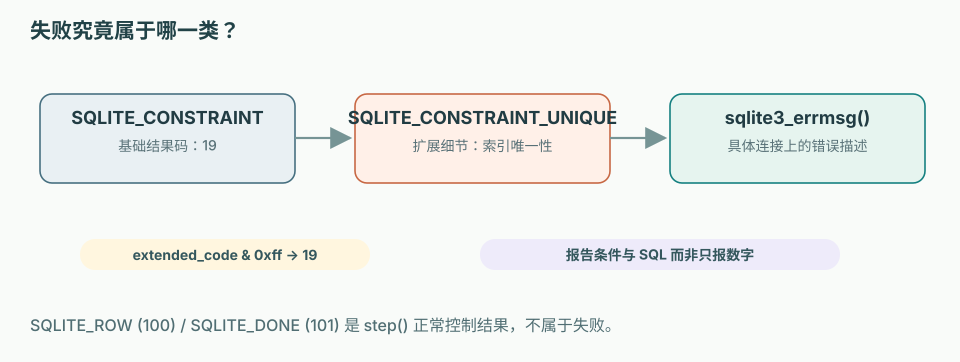
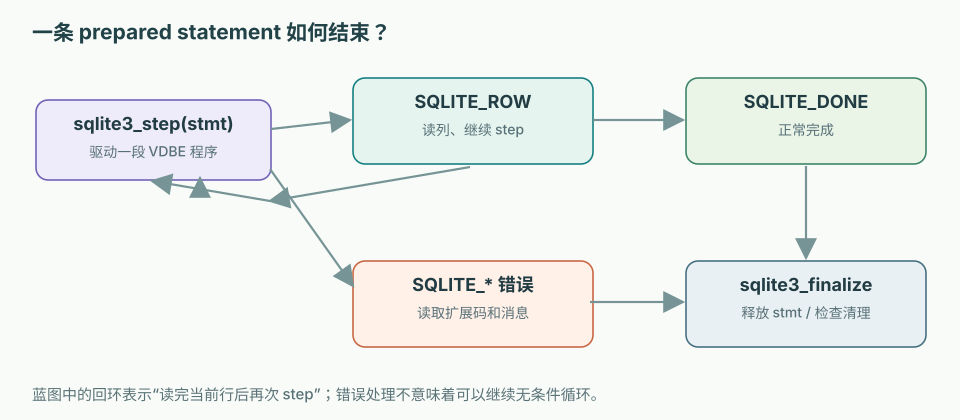
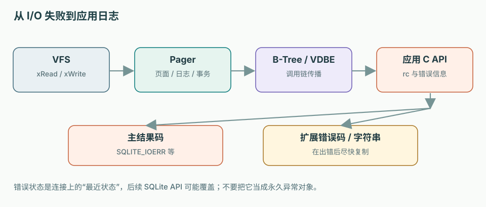

SQLite 错误处理：从 rc 到扩展错误码
一个失败的 INSERT 为什么有时返回 19，有时还能精确指出 UNIQUE？要回答它，必须分开控制流返回值、连接的最近错误状态，以及内部调用链的传播。
1. 一次 UNIQUE 失败为什么不只有一个 rc？
假设创建 CREATE TABLE users(email TEXT UNIQUE)，插入同一个邮箱两次。失败的原因不是通用“SQL 拼写错误”，而是一个非常具体的约束冲突。SQLite 使用基础结果码表示大类别，例如 SQLITE_CONSTRAINT（19），并提供扩展结果码区分具体子类，例如 SQLITE_CONSTRAINT_UNIQUE。

扩展结果码编码中包含基础结果码，使用 extended_code & 0xff 可取基础类别。然而应用代码不能假定所有失败都来自同一种扩展码，更不能把 SQLITE_ERROR 一概等同于约束违反。准确列表见 官方结果码文档。
| 接口/状态 | 回答的问题 | 注意 |
|---|---|---|
rc | 本次 API 返回什么？ | 随 API 及扩展码配置变化 |
sqlite3_errcode(db) | 连接当前记录的大类是什么？ | 可能受扩展结果码设置影响 |
sqlite3_extended_errcode(db) | 目前能提供的最细错误码是什么？ | 紧跟失败读取 |
sqlite3_errmsg(db) | 面向人的错误提示是什么？ | 不要将指针长时间保留 |
sqlite3_error_offset(db) | 语法错误是否有对应 UTF-8 偏移？ | 无可定位 token 时返回 -1 |
2. sqlite3_step() 的两个“非错误”特殊返回
sqlite3_step() 是 prepared statement 的运行入口。对于查询，它通常先返回零次或多次 SQLITE_ROW；每次 ROW 都可以读取当前行的数据；当不再有结果行时返回 SQLITE_DONE。如果发生 I/O、约束、锁或其他失败，则返回对应错误码。ROW 和 DONE 虽然数值非零，却不属于程序失败。

int rc;
while ((rc = sqlite3_step(stmt)) == SQLITE_ROW) {
const unsigned char *text = sqlite3_column_text(stmt, 0);
/* 只在当前结果行有效期内使用 text，NULL 要单独处理 */
}
if (rc != SQLITE_DONE) {
/* 在可能覆盖连接错误信息的其他操作前获取 rc / errmsg */
}
sqlite3_finalize(stmt);这里特意用 rc != SQLITE_DONE 做末态检查。不能把 while(sqlite3_step(stmt)) 当成正确循环，因为非零的 ROW、DONE 和错误码都可能被误解成真值。对非 SELECT 语句，一般成功调用 step 应返回 DONE，但约束冲突的时刻仍要检查 rc。
3. 结果码如何沿调用边界传播
在源码层，错误可能源自 SQL 解析、表达式代码生成、B-Tree、Pager 或 VFS。以一个文件读取失败为例，VFS 的文件操作报告不能完成读写，Pager 需要决定页面状态与事务处理，随后上层将错误转换/传播到执行器和 API 边界。传播不是简单地每层原封不动转发一个整数：某些上下文还会附加错误信息、回滚或清理。

可从 os_unix.c/os_win.c → pager.c → btree.c → vdbe.c/vdbeapi.c 定位相关代码。但如果失败发生在编译期，就不应先去 Pager 找因果。先确认 API 是 sqlite3_prepare_v2() 失败还是 sqlite3_step() 失败，能把排查空间压缩到更小。
sqlite3_errmsg() 返回的字符串内存归 SQLite 管理，后续 API 调用可能覆盖。多线程共享连接还会引入“最近错误属于哪个线程”问题。记录错误时应尽早复制必要值并遵守连接互斥约束。见 官方 API 说明。4. 用 C 程序复现并区分主/扩展错误码
这份可运行程序只使用官方公开 C API，不依赖 SQLite 内部结构体。按项目目录保存为 examples/06_error_codes.c；CI 会实际编译运行。
#include <stdio.h>
#include <sqlite3.h>
int main(void) {
sqlite3 *db = NULL;
sqlite3_stmt *stmt = NULL;
if (sqlite3_open(":memory:", &db) != SQLITE_OK) return 1;
int rc = sqlite3_exec(db,
"CREATE TABLE users(email TEXT UNIQUE);"
"INSERT INTO users VALUES('x@example.com');", NULL, NULL, NULL);
if (rc != SQLITE_OK) { sqlite3_close(db); return 2; }
rc = sqlite3_prepare_v2(db, "INSERT INTO users VALUES(?1)", -1, &stmt, NULL);
if (rc != SQLITE_OK) { sqlite3_close(db); return 3; }
sqlite3_bind_text(stmt, 1, "x@example.com", -1, SQLITE_STATIC);
rc = sqlite3_step(stmt);
int extended = sqlite3_extended_errcode(db);
printf("step=%d, primary=%d, extended=%d, message=%s\n",
rc, extended & 0xff, extended, sqlite3_errmsg(db));
sqlite3_finalize(stmt);
sqlite3_close(db);
return (extended & 0xff) == SQLITE_CONSTRAINT ? 0 : 4;
}# Linux / macOS：使用系统 SQLite 开发库
cc -std=c11 -Wall -Wextra -Werror examples/06_error_codes.c -lsqlite3 -o /tmp/06-error
/tmp/06-error
# 或与匹配版本的 sqlite3.c 一起编译（需 -I 指向头文件）断言仅要求基础类别为 SQLITE_CONSTRAINT，不把某一特定文本信息当稳定输出。正常配置和 SQLite 版本下，扩展错误码可进一步指出 UNIQUE。可将 sqlite3_extended_result_codes(db,1) 加入实验，比较 step 返回的结果码与显式读取扩展结果码之间的关系。
5. assert、testcase 与用户输入校验不是一回事
SQLite 源码广泛使用 assert() 检查内部不变量。断言更适合发现程序自身逻辑缺陷，而不是把用户提供的无效 SQL 当成需要直接终止进程的条件。testcase() 一类宏用于帮助覆盖复杂边界的测试代码；不同调试、覆盖配置与版本会改变它的宏行为，不可简单写成“调试模式下自动写入某个全局日志”。
从源码阅读角度，先检查调用链如何返回 rc 并清理内存，再看断言维护了哪一层不变量。例如语法错误应沿正常错误报告路径返回；内部无效指针或违反生命周期约束，才可能通过断言揭露缺陷。应用程序不要用 C 断言取代参数验证和错误处理。
| 情形 | 推荐判断 |
|---|---|
| SQL 存在语法错误 | 检查 prepare 返回值、message、offset |
| 唯一性约束冲突 | 检查 step/exec 与 extended error code |
| 数据库锁冲突 | 区分 BUSY/LOCKED，结合锁和事务语义 |
| 调试构建触发断言 | 保留源码版本、栈信息、复现 SQL |
6. 两个错误实验揭示编译期和执行期
第一个错误位于语法分析阶段（缺少有效的 SQL 结构），第二个错误在执行 INSERT 时检查唯一性。对同一 API，错误发生阶段不同，观察位置也不同。
-- 单独逐条执行（不要把预期报错的 SQL 当成整个事务的成功脚本）
SELECT FROM t; -- 语法错误，prepare 阶段
CREATE TABLE t(x TEXT UNIQUE);
INSERT INTO t VALUES('a');
INSERT INTO t VALUES('a'); -- 约束错误，step 阶段排错报告模板
- 记录
sqlite3_libversion()和sqlite3_sourceid()； - 标记失败 API、它的直接
rc，以及立即读取的扩展码； - 写出最小 SQL、表结构与预期；
- 确认是否有事务回滚或重试，说明无法从该实验判断的底层行为。
自测：为什么 SQLITE_DONE 不应进入错误日志？
它是 step 的成功终态。如果把所有非 SQLITE_OK 的码都当作失败，就会错误标记正常查询完成以及每次 SQLITE_ROW。
下一章用调试工具在 prepare 与 step 两个时刻观察这些差别。
来源与版本边界
以下官方资料用于核对接口、状态机和生成链。图是解释控制流的原创建模，并不意味着虚拟机 opcode、函数内部布局、日志文本及启用条件跨版本稳定。
- SQLite result codes · SQLite 官方文档
- Result Codes · SQLite 官方文档
- Error Codes And Messages · SQLite 官方文档
- sqlite3_step() · SQLite 官方文档
- Constraint conflict resolution · SQLite 官方文档